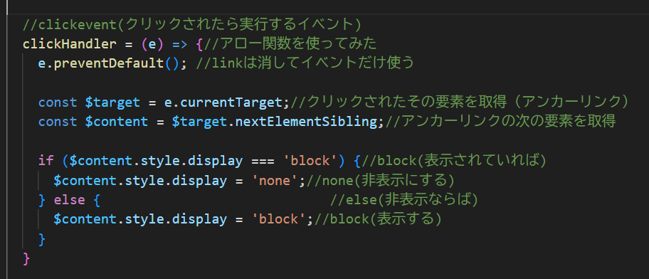
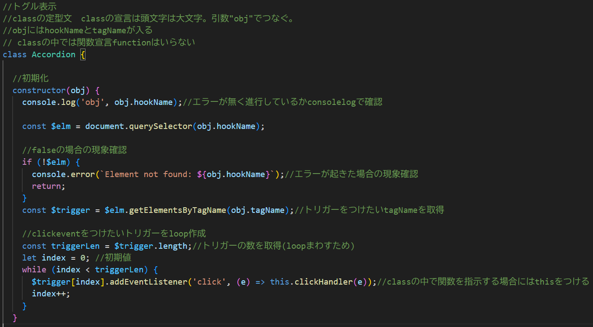
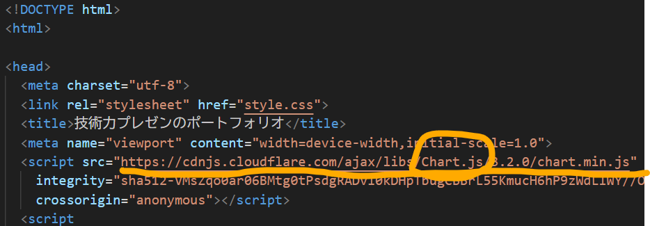
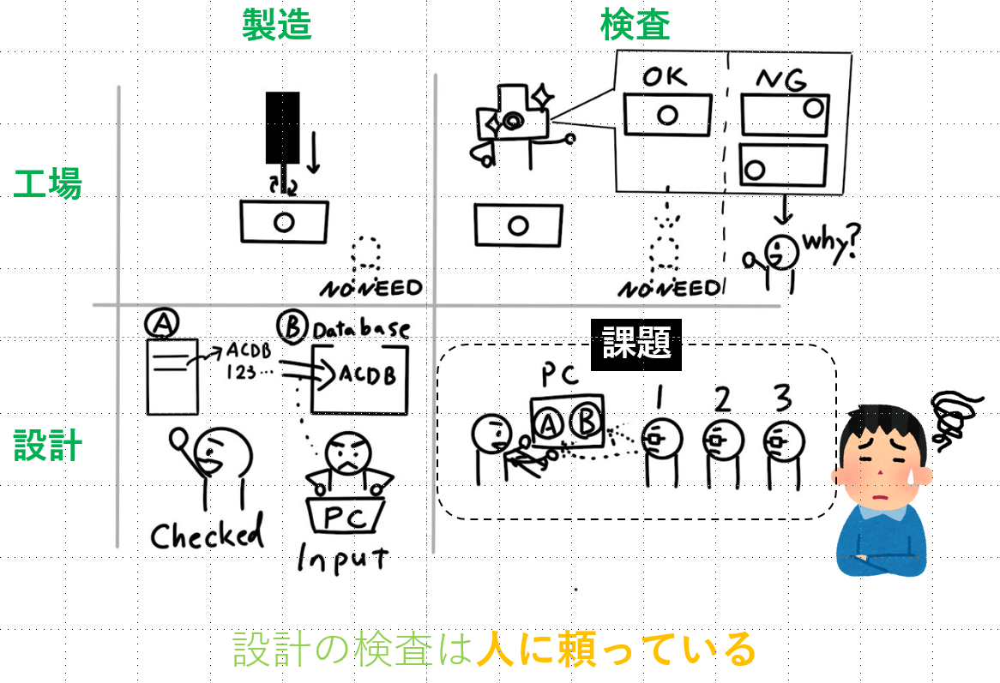

技術力プレゼンのポートフォリオ
前提
IT会社へ自分を売り込むことを想定。
自身のコーディングスキルのアピールに加え、将来実現したいビジョンを示す。
【コーディンングスキル】
スキル①：トグル表示
クリックイベントを実装。IF関数でクリックしたらCSSのdisplay(block/none)が切り替わるようにした。

classを独学してリファクタリング(同じようなトグル表示をコピーできるようにした)
エラーが起きた場合、現象確認がしやすいようにIF関数を入れリファクタリング。 
スキル②：グラフ作成
Chart.jsを活用。webのリンクをHTMLに書き込めば利用できると知った。

学習記録表は実際の学習時間。カーソルを合わせると詳細表示ができる。
【実現したいビジョン】
設計の現場で抱えてる悩みを技術的に解決するツールを作りたい

技術力を高めるために直近やること
「AIハッカソン」にエントリー済み。早速ツールの要素技術開発を検討中。
（画像認識技術の実装のために、VertexAI, Googlecolaboratory, python勉強中）
プログラミング基礎を学び、自信がついたのでチャレンジできました。
インストラクターのみなさま、研修を受けることを了承いただいた上司の方々、ありがとうございました。